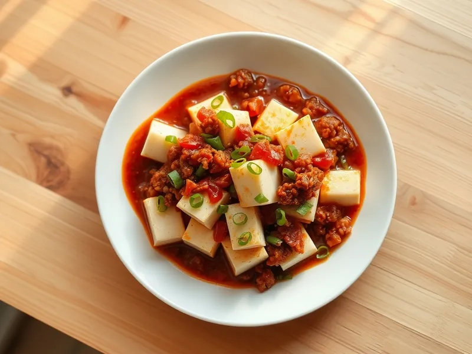

Мапо тофу с фаршем
Кубики тофу в остром соусе с фаршем, чесноком и имбирём по-сычуаньски
20 мин3 порц.364 ккал на порциюБ 23 · Ж 28 · У 8Азиатская кухня
Открыть в приложении: порции, таймеры, список покупок
Продукты на 3 порц.
- Тофу400 г
- Фарш свино-говяжий200 г
- Чеснок2 зуб.
- Имбирь10 г
- Острый перец молотый1 ч. л.
- Соевый соус2 ст. л.
- Крахмал2 ч. л.
- Вода1 стак.
- Растительное масло1 ст. л.
- Зелёный лук по желаниюпо вкусу
Как готовить
- Нарежьте тофу кубиками 2 см, чеснок и имбирь мелко порубите, зелёный лук нарежьте колечками.
- Разогрейте масло на сильном огне и обжарьте фарш 5 минут, разбивая лопаткой, до румяных крошек.
- Добавьте чеснок, имбирь и острый перец и жарьте 30 секунд до сильного аромата.
- Влейте воду и соевый соус и доведите до кипения. Осторожно выложите тофу и готовьте на среднем огне 5 минут, покачивая сковороду, чтобы кубики не ломались.
- Разведите крахмал в 2 ст. л. холодной воды, влейте тонкой струйкой и прогрейте 1 минуту, пока соус не загустеет и не станет глянцевым.
- Посыпьте зелёным луком и сразу подавайте.
Совет. Берите мягкий тофу или тофу средней плотности и не мешайте его ложкой, а покачивайте сковороду: так кубики остаются целыми.